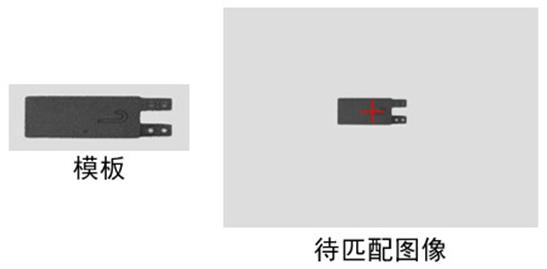

|
类型 |
灰度匹配 | |||||||||
|
描述 |
获取最佳匹配位置，支持亚像素精度 | |||||||||
|
语法 |
ZV_BESTTEMPL(img,modImg,minScore,tabId[,isSubpix=0,polar=0])
参数： img：ZVOBJECT类型，待匹配图像，图片为单通道图片 modImg：ZVOBJECT类型，模板图像 minScore：最低匹配分值 tabId：TABLE索引，匹配结果，输出参数，依次为score、x、y isSubpix：是否子像素精度插值，0-否，1-是 polar：匹配极性模式
| |||||||||
|
适用控制器 |
支持ZV功能或者5系列以上的控制器 | |||||||||
|
例子 |
 ZVOBJECT model_img,match_img ZV_ImgRead(model_img,"model4.jpg",0) '模版图像 ZV_ImgRead(match_img,"match_img3.bmp",0) '匹配图像 ZV_BESTTEMPL(match_img,model_img,60,0,0,0) '灰度匹配，结果存于起始索引为0开始的TABLE中 ?"匹配结果：",TABLE(0),TABLE(1),TABLE(2) |